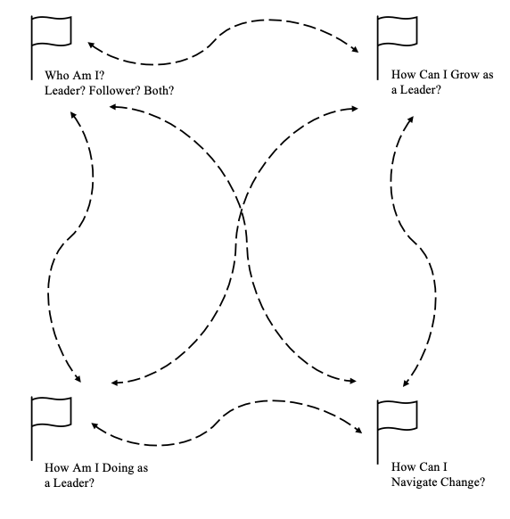

Summary
This final chapter emphasizes that leadership development is a complex journey rather than a linear progression from point A to B. It highlights how the previous chapters collectively encompass the various aspects of personal leadership development. The chapter concludes with an exercise encouraging leaders to reflect on their current challenges. By identifying relevant questions, readers are directed back to applicable chapters that offer insights and tools to address their concerns.
Chapter outline
- A Map for Holistic Leadership Development
- Turning an End into a Beginning
Personal Development Activities
To complete the reflection, first consult Figure 1 to identify one or multiple key questions and destinations on your leadership journey. For each destination, Table 1 refers you back to the development tools that can help you address in your desired leadership development destination.
Figure 1. Key Questions and Desired Development Destinations on Your Leadership Journey

Table 1. Desired Development Destinations and Tools
| Who Am I? Leader? Follower? Both? | How Am I Doing as a Leader? | How Can I Grow as a Leader? | How Can I Navigate Change? |
|---|---|---|---|
Leader-Follower Identity Tracker Chapter 2. Nieberle et al. |
Exercises to Set and Evaluate Your Leadership Goals Chapter 3. Jokisaari & Adriasola |
Impostor’s Playbook: Strategies for Overcoming Impostorism Chapter 4. Holmes et al. |
Action Planning to Make Work Meaningful Chapter 6. Gatti et al. |
Exercise to Reconcile Identity Conflict Chapter 6. Gatti et al. |
Decision Tree to Improve 360-degree Feedback Chapter 7. Hansbrough et al. |
Tools to Unlock Your Adaptability Chapter 5. Fan et al. |
Exercises to Leverage Thriving at Work Chapter 9. Johnson et al. |
Assessing Your Identity Levels Chapter 8. Lord et al. |
Assessing Team Thriving Chapter 9. Johnson et al. |
Battlefield to Boardroom Reflection Exercises Chapter 10. Huntoon & Wind |
Think-Reflect-Act Exercises to Leave Leadership Chapter 11. Guillen et al. |